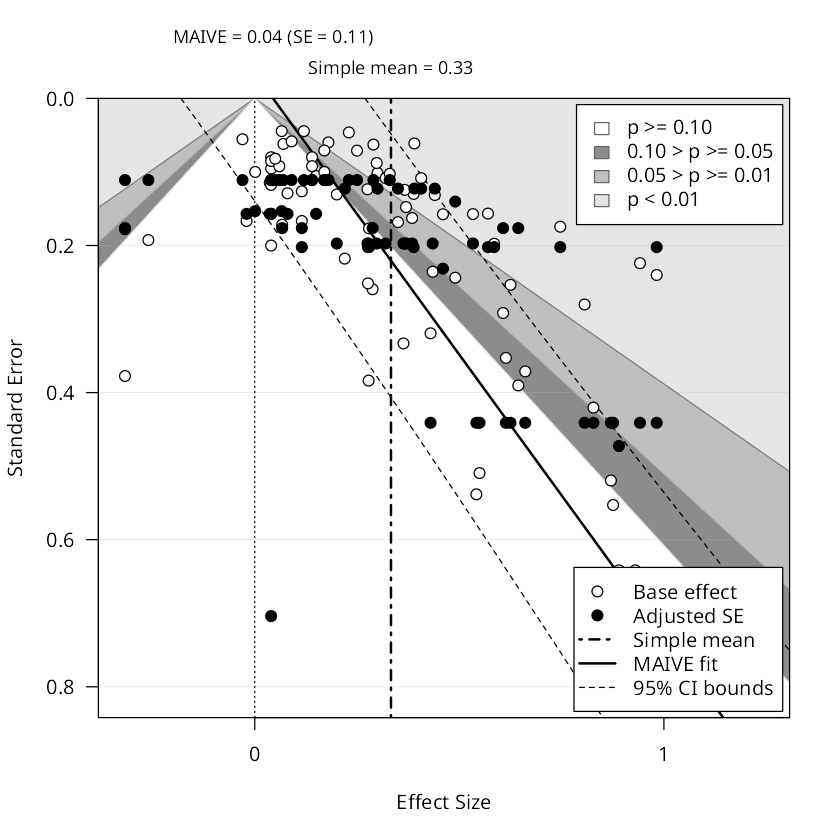
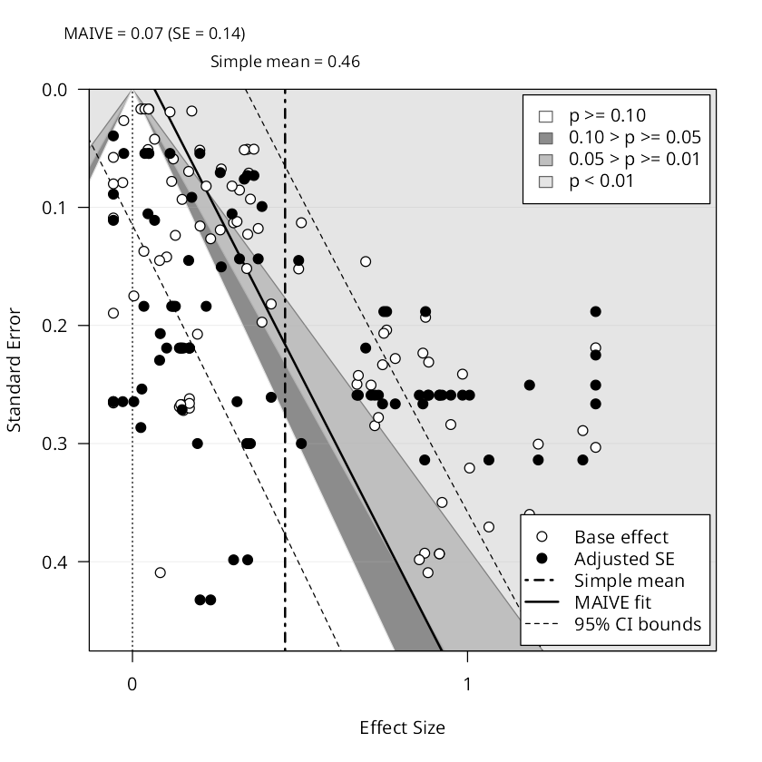
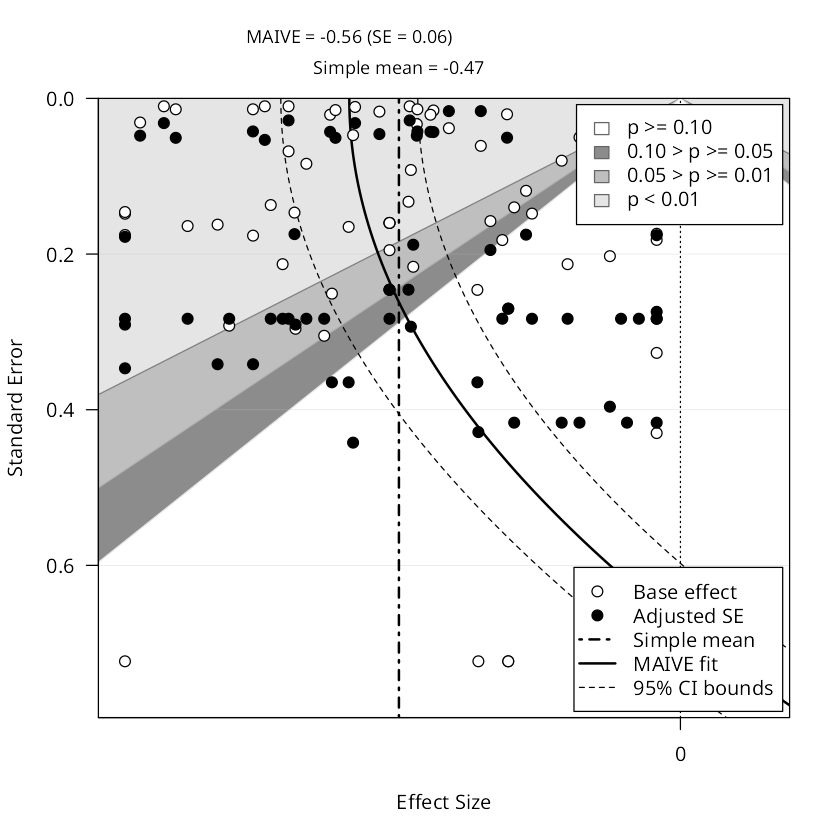

Candidates for the worked example on How to run MAIVE. Every funnel below is the plot EasyMeta returns for that subset, under the same recipe the page teaches: PET‑PEESE, log first stage, equal weights, CR2 clustered by study.
Winsorisation is applied to the data here, not passed as a setting: the shipped CSV is what was analysed. That matters because the MAIVE R package has no winsorisation argument, so a run that used the app's own setting could not be reproduced in R, while these can — the R code on the how-to page returns these numbers from these files.
What a good example needs, and why these were hard to find. The estimates have to be spread no wider than their own standard errors, or the cloud is a flat band instead of a triangle. The sample sizes have to vary a lot, or MAIVE's fitted standard errors — the filled points — collapse into a horizontal line. The first stage has to be strong. And there has to be real asymmetry to correct. Those pull against each other: the subsets homogeneous enough to look like a funnel tend to have too little variation in sample size to identify anything.
1. Hedge-fund alpha, asset-based-style models
Alpha estimates from asset-based-style pricing models on cross-sectional samples -- the corner of the literature where alpha is measured against a benchmark you can actually trade. 2% winsorisation.

| Simple mean | 0.33 |
|---|---|
| Plain PET‑PEESE | 0.097 |
| MAIVE | 0.045 (SE 0.115) |
| First‑stage F | 59.7 |
| Fit | PET |
| Bias test (Egger p) | 0.012 |
| Estimates / studies | 75 from 9 |
alphas: model_asset_based == 1 and data_cross_section == 1, winsorised at 2% ·
the exact CSV
The best of the four. A real funnel: the cloud spreads down the axis and leans right, and the correction runs one way the whole time -- 0.33% per month reported, 0.10% after plain PET-PEESE, 0.04% after MAIVE. The bias test rejects (p = 0.012) and the first stage is strong (F = 60). The fit is a straight PET line, and the Hausman test does not reject.
2. ESG and board gender diversity, emerging markets
Estimates for firms in emerging markets, from studies that control for firm size. Emerging-market governance is where board-composition rules are newest and the evidence thinnest. 5% winsorisation.

| Simple mean | 0.46 |
|---|---|
| Plain PET‑PEESE | -0.004 |
| MAIVE | 0.066 (SE 0.139) |
| First‑stage F | 16.9 |
| Fit | PET |
| Bias test (Egger p) | 0.047 |
| Estimates / studies | 87 from 23 |
esg: emerging == 1 and control_firm_size == 1, winsorised at 5% ·
the exact CSV
Keeps the ESG numbers you liked and finally has the shape: 87 estimates spread across the axis, a clear rightward lean, a reported mean of 0.46 falling to 0.07. The bias test rejects (p = 0.047). Against it: plain PET-PEESE lands slightly BELOW MAIVE, so the ladder is not monotone and the spurious-precision sentence gets harder to write.
3. Electricity demand in India, average-price measures
Price elasticities of electricity demand in India, identified off an average-price measure. 5% winsorisation.

| Simple mean | -0.47 |
|---|---|
| Plain PET‑PEESE | -0.480 |
| MAIVE | -0.558 (SE 0.059) |
| First‑stage F | 18.3 |
| Fit | PEESE |
| Bias test (Egger p) | 0.163 not significant |
| Estimates / studies | 64 from 12 |
electricity: se_source == 'reported', average_price == 1, country == 'India', winsorised at 5% ·
the exact CSV
The only one with the curved PEESE fit. But the cloud is a rectangular block rather than a funnel, the bias test does not reject (p = 0.16), and the correction moves away from zero.
Numbers fetched live on 2026-08-24. This page is a workbench: it is not linked from the site and is excluded from the search index and the sitemap.